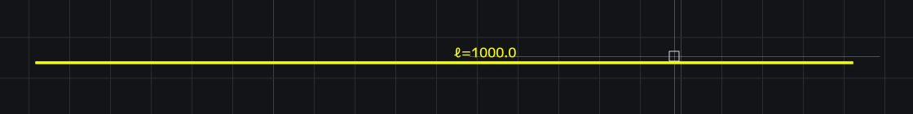
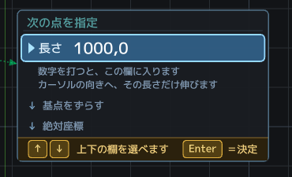
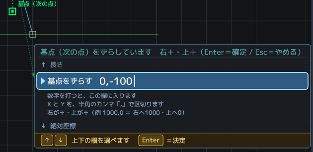

Two places to type
- The Command Line (at the bottom, name plate 小窓：CommandLine) = where words and numbers are received.
- The field beside the cursor = where distances are received (when dynamic distance input is on).
Enter accepts, in both.
Absolute and relative coordinates
- 1000,500 = absolute. The point 1000 right and 500 up from the origin (0,0).
- @100,50 = relative. 100 right and 50 up from the previous point.
Right is +, up is + (the same directions as the X and Y arrows standing at the origin).
The comma is a half-width comma.
Distance input (beside the cursor)

Once you have picked a base point, aim the cursor the way you want to go and type a number → Enter = it travels that distance in that direction.
The cursor gives the direction, the number gives the length. They divide the work between them.
For a rectangle (REC) you can also give 700,700 — that is width,height.
When you want the first point at an absolute coordinate
Type the first point into the Command Line below (for example 0,0 = the origin of the drawing).
If you type a number while the first point is awaited, the Command Line lights up by itself and takes the number. Just carry on and press Enter.
※ The field beside the cursor is the field that appears after a base point has been picked.
The field beside the cursor has three rows (choose with ↑↓)

From the top: length / shift the base point / absolute coordinate.
↑↓ move between the rows, and Tab cycles through them as well. Enter accepts.
The third row, absolute coordinate, takes the coordinate measured from the drawing origin (0,0) exactly as it is (0,0 or 1000,500, say). The base point is not used.
It is also useful when you want to confirm where the origin actually was.
Shifting the base point itself (@)

While a point is awaited, type @ and a green square stands on the point you have caught; type something like @910,0 and the base point itself moves.
Enter accepts, Esc cancels.
This is the hand for “I want to start drawing 910 to the right of the corner of that column”.
You can do the arithmetic as you type (the calculator)
Anywhere you can type a number, you can type an expression instead. · 3640-910 = 2730 (what is left of the wall) · 455*4 = 1820 (setting out a 455 module) · (1820+910)/2 = 1365 (the middle)
You may use + − × ÷ and brackets. Full-width characters are accepted too.
The radius of a circle, for instance. C → click the centre → 3640/2 → Enter draws a circle of radius 1820. The distance beside the cursor works the same way.
No more opening a calculator, memorising the answer, coming back and typing it again.
Type an expression on its own into the Command Line and it simply returns the answer (as a calculator).
The 電卓 (Calculator) button next to the Command Line's name plate also explains how to use it.
※ You cannot divide by zero. Give the number alone, without a unit (4000, not 4000mm).
Another face of the Command Line
The radius of a circle can also be typed as 4000, R2000 or D8000 (diameter).
The destination of a move or a copy can be typed as @1000,0 as well.